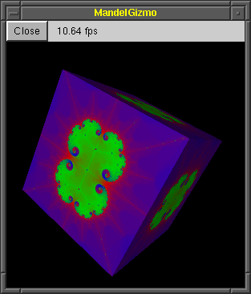

|
Contents |
Lesson 4 |
Lesson 6 |
| Introduction |
This lesson will describe GLOW's powerful organizational tool, the component tree. Similar in spirit to a scene graph, the component tree allows you to create reuseable drawing components for constructing complex scenes with user interaction. Along the way, we'll learn how to segment windows into panes using subwindows, and we'll learn how to use GLOW's powerful 3D view manipulator to provide a way for a user to move around a 3D scene. At the end of this lesson, you should have an understanding of how to use the component tree to create interactive scenes.
| Why use components? |
 Now that we have a powerful program for creating images of the Mandelbrot Set, it would be neat if we could do things with those images other than just viewing them. To that end, we'll implement a rather random feature: the ability to view a 3D cube texture-mapped with the Mandelbrot Set. We'll want to be able to open new windows a cube textured with the current image, as many as we want; we'll want to be able to close them when we're done looking at them; and we'll want to be able to rotate the cube to see its various sides.
Now, this feature set poses several problems for us. First of all, how do we allow a user to close one of our cube windows? GLUT doesn't provide a way to detect a window manager close event (and in fact most GLUT implementations terminate the entire program if a window is closed). One way to get around this is to provide a "close" pushbutton in the window. However, in the previous lesson, the only way to create widgets was to open a whole new window; we didn't learn any way to add widgets to an existing window. Fortunately, there's a way around this: create a subwindow inside our cube window and add widgets to the subwindow. We'll see how to do this shortly.
Second, how do we implement a way for the user to rotate the cube in an intuitive way? The algorithms behind this aren't entirely trivial, and we'd like to avoid mucking around with quaternions if we can help it. Fortunately, GLOW includes an implementation of such a rotater, based on the arcball algorithm developed by Ken Shoemake. We can simply plug the arcball module into our drawing system, hook it up to the mouse events, and we'll have a rotatable cube. We'll also see how this is done shortly.
The component tree
Both the above techniques are based on a concept called the component tree. This is a way to organize drawing commands in a GLOW window. If you are familiar with the concept of a scene graph, you'll find that the component tree is quite similar.
So far, we've done drawing by overriding the OnEndPaint() method in our GlowWindow subclass. There is another way to issue drawing commands, though: by attaching components to the window. A component is a subclass of GlowComponent, and it exists for two primary purposes: to draw itself, and to have other components attached to it. In fact, if you look carefully at glow.h, you'll notice that GlowWindow is in fact a subclass of GlowComponent because it can do those two things: draw itself and have components attached to it. GlowWidget is also a subclass of GlowComponent.
The purpose of components is code reuse. If you have an object or some other series of drawing commands that will be used in many different scenes in a program, you may encapsulate them in a component. Then, whenever you want to draw that object or execute that set of drawing commands, you merely need to attach an instance of the component to your scene window. For example, if you had a component class that draws a sphere, and another component class that draws a teapot, you can attach both to your window class to have it draw both a sphere and a teapot.
This may seem rather trivial, and you may be wondering, why not just write a function? However, as we'll see later, components can be used in powerful ways, allowing you to build complex and interactive scenes very simply. First, however, let's look at subwindows.
Reference: class GlowComponent
| Creating panes |
Let's take a look at the new code for lesson 5. Notice that we have created two new files, mandelgizmo.h and mandelgizmo.cpp. These will contain the classes that implement our textured cube window. First, take a quick look at mandelgizmo.h. There shouldn't be much surprising here; we define a class MandelGizmoWindow subclassing GlowWindow. However, notice that the class does not override the OnEndPaint() method! This window class does not do any drawing on its own; instead, all the drawing is done by attached components.
Now let's jump into mandelgizmo.cpp, and look down at the bottom of the file, at the constructor for MandelGizmoWindow. First, notice the first line:
Init("MandelGizmo", GlowWindow::autoPosition, GlowWindow::autoPosition, 200, 225, Glow::rgbBuffer, Glow::noEvents);This is just another way to initialize the GlowWindow. If you recall, in the MandelWind constructor, we passed the same parameters to a constructor of GlowWindow. You need to do one of the two: call the GlowWindow constructor, or call the Init() method, to actually create and initialize the window.
Creating a widget palette subwindow
_widgetsPanel = new GlowQuickPaletteSubwindow(this, 0, 0, 200, 25, GlowQuickPalette::horizontal, GlowQuickPalette::alignCenter, 10, 0, 0);There's a subtle difference here from how we created a widget palette in lesson 4. Instead of GlowQuickPaletteWindow, we create an object of type GlowQuickPaletteSubwindow. A subwindow is a special kind of window that is contained within another window. The subwindow shouldn't have a title bar or other window decorations, and shouldn't be moveable or resizeable by the user. You can think of it as a pane within its containing window. A subwindow includes its own OpenGL context and receives events like any other window. If you're familiar with GLUT subwindows, then you'll know how a subwindow is supposed to behave. Notice that we pass the this pointer as the first parameter to the constructor; this indicates that the subwindow should be attached to our MandelGizmoWindow. Also, the values given for the position of the new subwindow (0, 0) are in the containing window's local coordinates; in this case, the subwindow will be positioned at the upper left corner of our toplevel window.
Here we created a subwindow that can have widgets added to it according to the QuickPalette API. Notice that in this case we asked the panel to be arranged horizontally, and for it to have no margins. We also made its width equal to the width of the parent window; that is, the subwindow stretches across the top of the window like a menu bar. The next few lines add widgets to the subwindow:
_widgetsPanel->AddDismissPushButton("Close", this);This line adds a special type of pushbutton to the subwindow-- a dismiss pushbutton. This kind of pushbutton causes some component to be deleted when it is pressed. In this case, we specify the this pointer as the component that will be deleted; i.e. when the button is pressed, our MandelGizmoWindow will be closed. Because it is often contained within the window (or component) it will be dismissing, a dismiss pushbutton uses the Close() method rather than deleting the object directly.
GlowLabelWidget* fpsIndicator = _widgetsPanel->AddLabel("0000.00 fps");Here we add another widget to the subwindow. It will be a frame rate indicator, implemented as a label widget. As the cube is drawn, we will update this label to show how well our graphics hardware (or lack thereof) is doing with the textured cube.
Note that we've done something rather subtle here-- we've given the label some rather bogus initial text. Actually, this text was deliberately chosen. When the widget subwindow is packed (in the next line), the label will be asked how much space it needs, based on what text is being displayed, and only that amount of space will be allocated to it. However, we know the text is going to change as we cause the cube to be redrawn. Therefore, we provide an initial value that we know will be at least as wide as any value that we'll actually want to draw.
_widgetsPanel->Pack(true);Once again, we use the Pack() method to arrange the widgets. Notice that, for a GlowQuickPaletteSubwindow, the pack method takes a boolean parameter, which specifies whether the subwindow should be resized to its preferred size after being packed. In this case, we do resize the subwindow, to make sure it is set to its preferred height. This is because we want the drawing subwindow to be located right below it:
Creating the drawing subwindow
_gizmoPanel = new MandelGizmoSubwindow(this, 200, _widgetsPanel->Height(), image, width, height, fpsIndicator); Reshape(200, 200+_widgetsPanel->Height());Here we create a second subwindow, which will contain the drawing of the cube. It covers the remaining area of the window. We'll look at this subwindow a little more in the next section, but for now, just note that we're positioning it just below the widget bar (the y-location is the height of the widget panel). After the subwindow is created, we call the Reshape() method to programmatically resize the toplevel window to a size big enough to hold both subwindows.
Handling window resizing with subwindows
We'll look at the drawing subwindow in more detail in the next section, but first, let's take a look at the OnReshape() method of MandelGizmoWindow. The first thing we do is enforce a minimum size:
if (width < 40 || height < 40+_widgetsPanel->Height()) { Reshape(max(width, 40), max(height, 40+_widgetsPanel->Height())); }Here we test the size of the window, and if it is too small in one dimension or another, we resize it again. This is, by the way, pretty much the same method that GlowFixedSizeWindow uses to keep a window the same size. If the size is okay, then we need to update the sizes and positions of the subwindows within the window; these are not updated automatically when the toplevel window is resized. First, we handle the widget bar:
if (width != _widgetsPanel->Width()) { _widgetsPanel->Reshape(width, _widgetsPanel->Height()); }The widget subwindow maintains the vertical size that was computed when we called Pack(), but we cause its horizontal size to span the width of the window. We then position and size the drawing subwindow snugly in the remaining space, while keeping its shape square:
height -= _widgetsPanel->Height(); int gizmoSize = min(width, height); _gizmoPanel->Move((width-gizmoSize)/2, _widgetsPanel->Height()+(height-gizmoSize)/2); _gizmoPanel->Reshape(gizmoSize, gizmoSize);Positioning a subwindow is accomplished by the Move() method. Notice that the position is specified in local window coordinates of its parent window, which is the MandelGizmoWindow in this case. Finally, the last statement updates the viewport for the toplevel window.
::glViewport(0, 0, width, height);Whoa! Why bother calling glViewport()? I thought we weren't doing any drawing in the class MandelGizmoWindow.
Okay, you caught me. I kinda lied; actually, technically, we do need to do some drawing in the toplevel window. This is because we've constrained the drawing subwindow to be square. This means that the two subwindows will not necessarily cover the entire toplevel window; some of it will be exposed. This area needs to be cleared to black. Now it turns out that this is done for us already. You may recall from Lesson 1 that GLOW automatically calls glClear() to clear the window to black for you. This occurs in the default implementation of the OnBeginPaint() method. (You can look up GlowSubwindow::OnBeginPaint() in the file glow.cpp to see this.) In order for this to cover the entire window area, we need to set the viewport whenever we resize the toplevel window.
And yes, OnBeginPaint() will be covered in the next section.
I notice you called Init() to initialize the window to 200x200, but then you resized it at the end of the constructor when you had computed the final height (including the widget bar). Why not wait until the final size was computed before initializing the window?
Good question. Because of the way GLOW is designed, you cannot perform any operations on a window, subwindow or component until you have initialized it, by calling a parameterized constructor or the Init() method. This includes any operations, including resizing, moving, attaching components, anything. In our case, adding widgets to the subwindow involves attaching components (because widgets are implemented as components.) Therefore, we need to initialize the subwindow first, then add the widgets, and finally, resize the subwindow to match the computed height.
Because of this restriction, it is probably usually best to use the parameterized constructor to initialize the object immediately at the start of the constructor. The Init() method is provided as a convenience in case you need to perform some complex computations in the constructor before actually initializing the object. In the case of this lesson, it would probably have been better to use the parameterized constructor (and this is what we do for MandelGizmoSubwindow's constructor below) but I thought I'd mention the Init() method also because it is sometimes useful.
Source: mandelgizmo.h
Source: mandelgizmo.cpp
Reference: class GlowDismissPushButtonWidget
Reference: class GlowQuickPaletteSubwindow
| Drawing the cube |
Setting up the subwindow
In this section, we'll take a closer look at the MandelGizmoSubwindow. First, the constructor. We pass the appropriate parameters to the base class's constructor to actually initialize the subwindow:
MandelGizmoSubwindow::MandelGizmoSubwindow(GlowComponent* parent, int size, int ypos, const unsigned char* image, int width, int height, GlowLabelWidget* fpsIndicator) : GlowSubwindow(parent, 0, ypos, size, size, Glow::rgbaBuffer | Glow::depthBuffer | Glow::doubleBuffer, Glow::mouseEvents | Glow::dragEvents) { ...We could also have called the Init() method. Notice that the first parameter of the constructor is a pointer to the parent of the subwindow; i.e. the component that the subwindow should be attached to. A subwindow may be attached to a toplevel window, another subwindow, or even a component. Next, we start doing some curious things:
SetAutoSwapBuffersEnabled(false);Normally, GLOW will automatically swap buffers once you're done drawing. This call disables automatic swapping of buffers for this subwindow. We do this because we want to manually swap buffers further below. I'll explain why later on.
Setting up a rotatable cube
_manip = new GlowViewManipulator(this, GlowViewManipulatorParams::defaults); _manip->SetSpinnable(true); new MandelGizmoComponent(_manip, image, width, height);What we've done here is create a component tree underneath the subwindow. First, we create a GlowViewManipulator object, and attach it to this, the subwindow. The second parameter to the constructor indicates to use the default parameters for the view manipulator. This is an example of the parameter block API, described in greater detail in lesson 7. The next line modifies a property of the view manipulator, allowing it to be "spun", Open Inventor style. GlowViewManipulator, along with some related classes, includes a lot of nice features for manipulating 3D scenes; we'll cover some of them in lesson 8. Finally, we attach a MandelGizmoComponent to the manipulator. The result is a three-layer structure, with the subwindow on top, the manipulator under the subwindow, and the gizmo component under the manipulator.
Now why did we do all that? Well, our goal was to create a drawing that could be rotated in 3D. The class GlowViewManipulator provides just the code that we need. It can be controlled by calling a set of methods in response to mouse events, and it affects the drawing of any components that live under it in the component tree-- in this case, the MandelGizmoComponent. To use the class GlowViewManipulator, we also need to:
#include "glowViewTransform.h"Notice that we didn't write an explicit destructor for MandelGizmoSubwindow. The destructor for GlowComponent automatically deletes all the attached components, so we don't have to do that cleanup ourselves. However, this also means we need to be careful about how we delete components, as well as windows and subwindows, which are subclasses of components. The safest way to delete a component is to call its Close() method. This is a deferred-delete method that waits until you've finished handling the current event and passed control back to GLOW before it actually deletes the object.
You can simply delete a component object directly; however, this is potentially dangerous. For example, take the close button we implemented earlier. What if we had decided to add a normal pushbutton, connected to a receiver that directly deleted the MandelGizmoWindow? This would cause the window and everything attached to it to be destructed, including the subwindows and the pushbutton itself. But then, what happens when we return from the receiver's OnMessage method? GLOW is in the middle of iterating over the pushbutton's receivers, but suddenly, the pushbutton object and all its data (including the receiver list) has been destructed from underneath it. This will probably lead to a segmentation fault. To avoid this problem, the pushbutton that we actually created using AddDismissPushButton() does a deferred delete by calling Close(). If you need to delete a component, subwindow or window manually, it is probably best to do the same.
Writing a component
Let's take a detour and look at the class MandelGizmoComponent.
class MandelGizmoComponent : public GlowComponent { ... virtual void OnEndPaint();A component is an object that knows how to draw itself. We're already familiar with the OnEndPaint() method. Most of the code in the methods of MandelGizmoComponent have to do with rendering the textured cube itself; we won't look at this in detail since I assume you already know OpenGL. For now, just note a couple of things.
MandelGizmoComponent::MandelGizmoComponent(GlowComponent* parent, const unsigned char* image, int width, int height) : GlowComponent(parent) { ...The constructor of the base class GlowComponent has only one parameter, a pointer to the parent. In our case, the parent is the view manipulator. A component must be connected to a component tree when it is initialized.
In addition, if you look at the OnEndPaint() method, you'll see that it contains only the drawing commands necessary to draw the cube. It doesn't set up any matrices, camera, lighting or anything of the sort; it depends on its parents to perform that setup. Think of it as a function that draws the cube using the current transforms, lighting, texture and other parameters set up by the caller.
Drawing the component tree
To understand how drawing is being done in our program, let's go back to the class MandelGizmoSubwindow and look at the drawing methods.
class MandelGizmoSubwindow : public GlowSubwindow { ... virtual bool OnBeginPaint(); virtual void OnEndPaint(); ...Yes, there are two now: OnBeginPaint() and OnEndPaint(). Why? Well, to put it simply, OnBeginPaint() is called at the start of drawing, before any of the attached components (which I usually call child components) are drawn. OnEndPaint() is called at the end of drawing, after all the child components have been drawn. So you'll notice that all the OpenGL setup commands-- lighting, state, transforms, etc.-- are done in OnBeginPaint(). The default OnBeginPaint() method for GlowSubwindow and GlowWindow issues a glClear() to clear the frame buffer to black, which is why we never had to do that explicitly before. Now that we're writing our own OnBeginPaint(), we need to do that part of the initialization ourselves.
The other thing that OnBeginPaint() and OnEndPaint() are doing is measuring the frame rate. At the very start of OnBeginPaint(), you'll see this line:
_starting = Glow::GetMilliseconds();GetMilliseconds() is a static method of class Glow that returns the number of milliseconds elapsed since GLOW was initialized. In OnEndPaint(), at the very end of our drawing process, we measure the time elapsed during the drawing, and set the text our our frame rate indicator label widget:
sprintf(buf, "%.2f fps", float(1000)/float(max(Glow::GetMilliseconds()-_starting, 1))); _fpsIndicator->SetText(buf);Notice, however, the two lines preceding the frame rate computation:
::glFlush(); Glow::SwapBuffers();Those lines effectively force the OpenGL pipeline to flush. Calling Glow::SwapBuffers() is equivalent to calling ::glutSwapBuffers(), and causes the front and back buffers to be swapped. Normally, this is called automatically by GLOW, but here we do it explicitly ourselves because we want to force the buffers to swap before we finish computing the frame rate.
Measuring time is not the only reason you'll want to use both drawing methods, though. GlowViewManipulator uses them in a clever way to do its work. Recall that a view manipulator component causes all its child components to be drawn with a rotation applied. This is done very simply. The OnBeginPaint() method of GlowViewManipulator contains something similar these OpenGL commands:
::glMatrixMode(GL_MODELVIEW); ::glPushMatrix(); ::glRotatef( ... )The OnEndPaint() method, in turn, contains:
::glMatrixMode(GL_MODELVIEW); ::glPopMatrix();This has the effect, just like traversing a scene graph, of applying the rotation to the children of the view manipulator. First, the old matrix is pushed onto the matrix stack; then the rotation is applied; then the children are drawn; finally the original matrix is popped off the stack.
You may have already noticed that OnBeginPaint() returns a boolean value. This allows the component to control the drawing of its child components. If you return true, the child components will be drawn by having their OnBeginPaint() and OnEndPaint() methods called. If you return false, the child components will not be drawn. Normally, you should simply return true from OnEndPaint().
Handling subwindow events
To finish up our discussion on the GlowViewManipulator, we need to respond to mouse events in the drawing subwindow by informing the view manipulator. To do that, we override the mouse event handlers in MandelGizmoSubwindow:
class MandelGizmoSubwindow : public GlowSubwindow { ... virtual void OnMouseDown(Glow::MouseButton button, int x, int y, Glow::Modifiers modifiers); virtual void OnMouseUp(Glow::MouseButton button, int x, int y, Glow::Modifiers modifiers); virtual void OnMouseDrag(int x, int y); ...Each method passes the mouse event to an appropriate method of the view manipulator. For example, in response to mouse down events, we call GlowViewManipulator::BeginRotation():
if (_manip->GetState() == GlowViewManipulator::idleState) { GLfloat xn, yn; NormalizeCoordinates(x, y, xn, yn); _manip->BeginRotationDrag(xn, yn); }First, we checked the state of the manipulator to make sure it wasn't already being dragged. Then, we need to transform the mouse coordinates from window coordinates (pixel coordinates with (0,0) at the upper left) to OpenGL coordinates (normalized coordinates with (0,0) at the center, and y increasing upwards). Then, we pass the transformed coordinates to the manipulator and request that it begin rotating. In response to mouse drag and mouse up events, we call GlowViewManipulator::InDrag() and GlowViewManipulator::EndDrag(), respectively.
Okay, I'm still confused by OnBeginPaint() and OnEndPaint() and all this child component drawing stuff. When exactly are the methods called?
Perhaps it would be easier to know what GLOW is doing behind the scenes. When a component (including a subwindow or window, because those are also components) needs to be redrawn, GLOW goes through this process:
method GlowComponent::Draw() // written in pseudocode { bool drawChildren = this->OnBeginPaint(); if (drawChildren) { foreach child(this) do { if (! child->instanceof(GlowSubwindow)) child->Draw() } } this->OnEndPaint(); }Notice that we stop the recursion when we encounter a GlowSubwindow because each subwindow contains its own OpenGL context, and GLUT will send each subwindow its own refresh event.
For example, our MandelGizmoSubwindow has one child, a GlowViewTransform, which in turn also has one child, a MandelGizmoComponent. When the subwindow receives a refresh event, the following methods will be called in this order:
MandelGizmoSubwindow::OnBeginPaint()
GlowViewTransform::OnBeginPaint()
MandelGizmoComponent::OnBeginPaint()
MandelGizmoComponent::OnEndPaint()
GlowViewTransform::OnEndPaint()
MandelGizmoSubwindow::OnEndPaint()If we were to add a second MandelGizmoComponent child to our GlowViewTransform, the order would be:
MandelGizmoSubwindow::OnBeginPaint()
GlowViewTransform::OnBeginPaint()
MandelGizmoComponent_1::OnBeginPaint()
MandelGizmoComponent_1::OnEndPaint()
MandelGizmoComponent_2::OnBeginPaint()
MandelGizmoComponent_2::OnEndPaint()
GlowViewTransform::OnEndPaint()
MandelGizmoSubwindow::OnEndPaint()Our toplevel window MandelGizmoWindow has two children, both of which are subwindows. Therefore, redrawing doesn't propagate to its children. When it receives a refresh event, these methods are called:
MandelGizmoWindow::OnBeginPaint()
MandelGizmoWindow::OnEndPaint()
Source: mandelgizmo.cpp
Reference: class Glow
Reference: class GlowComponent
Reference: class GlowLabelWidget
Reference: class GlowSubwindow
Reference: class GlowViewManipulator
| Putting it together |
Once again, we don't need to modify our main function in mandelglow.cpp. However, a few minor modifications were made to the MandelWind class in mandelwind.h and mandelwind.cpp. We simply added a pushbutton that creates a MandelGizmoWindow using the current Mandelbrot image. Can you find where that code was added?
We also need to add a few more GLOW modules to our Makefile:
- glowViewTransform
- Implements the GlowViewManipulator component.
- glowVectorAlgebra
- Implements a set of vector algebra classes, including 3-vectors, 4-matrices, and quaternions. These are used internally by GlowViewManipulator, and you may also use them to interface with the manipulator if you're doing more advanced 3D manipulation.
Compile and run the program. Mouse around the Mandelbrot Set until you've found a nice-looking image, then press the "Open Gizmo" button to open a new window with a cube textured with the image. You can spin the cube arounnd.
Source: mandelglow.cpp
Source: mandelwind.h
Source: mandelwind.cpp
Source: Makefile
| Where to go from here |
Congratulations! We've covered all the important features of GLOW! You now have all the tools to write powerful interactive programs using OpenGL and GLOW.
From this point on, the tutorial will deal primarily with advanced features. The next lesson, however, might be of interest. It describes how to integrate GLOW and GLUT code. It may be useful if you have an existing GLUT program that you don't want to convert to GLOW's object and event model, but you want to add a few GLOW-based features such as widgets.
|
Contents |
Lesson 4 |
Lesson 6 |
The GLOW Toolkit